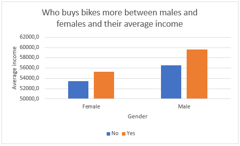
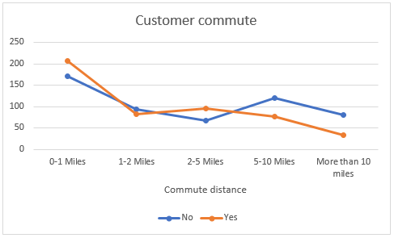
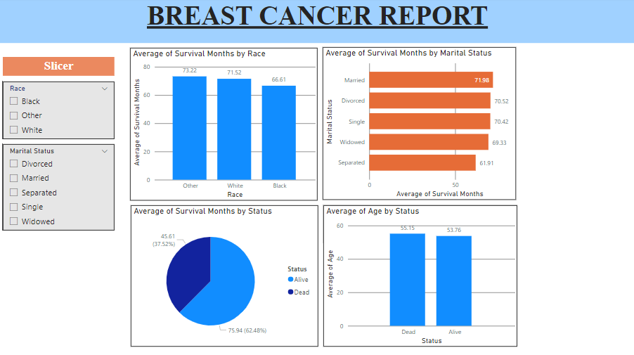

Welcome to my portfolio Project. This section shows a snipped of an Excel-based project. Some of the questions the project seeks to answer is whether the sale of bikes is closely linked to the commute distance, Average income of males versus females, and Age. Click GitHub to get to the spreadsheep. Within the spreadsheep, there is raw data, cleaned data, pivot tables and dashboad.
EXCEL PROJECT - BIKE SALES



SQL AND POWER BI PROJECT - BREAST CANCER
Breast cancer is easily one of the major diseases faced mostly be women. This section also uses data from Kaggle website in an attempt to answer the following questions: Does age have an impact in the fatality of women with breast cancer, What is the likelihood of dying when they are single, married, widowed or separated, and lastly does race have any role to play in women diagnosed with breast cancer. Click GitHub to get to the repository. Within the repository, there is a README, SQL query, and a Power BI file.
